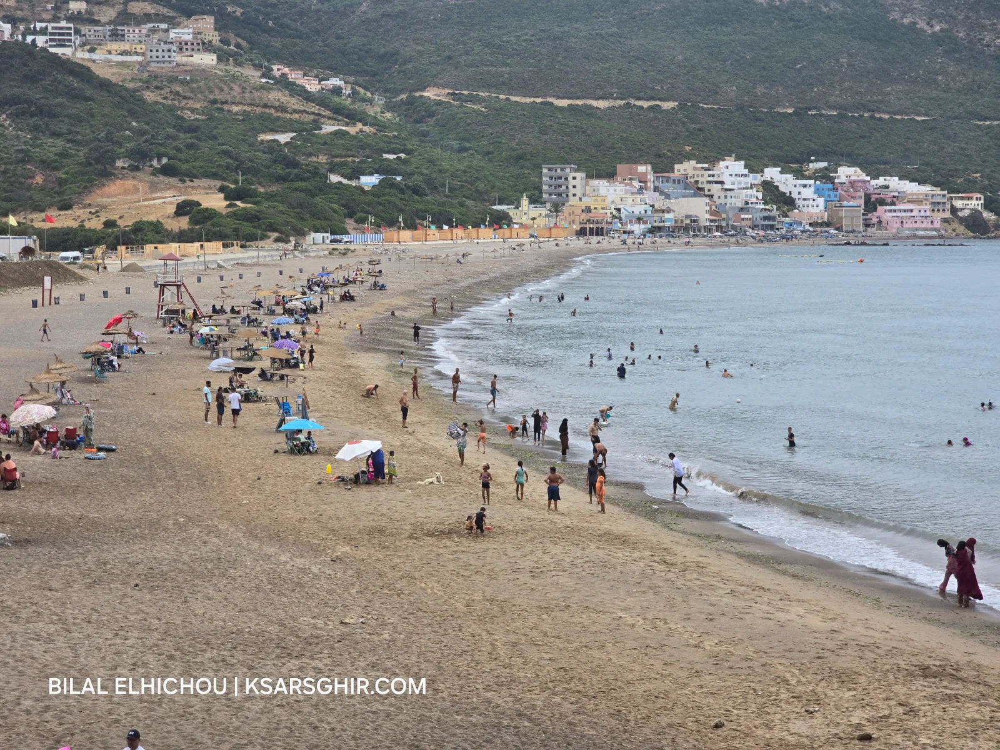

🌿 Naturaleza
Oued El Marsa — joya natural donde las montañas se encuentran con el mar. Camping y biodiversidad rara.

Oued El Marsa — joya natural virgen donde las montañas del Rif se encuentran con las aguas del estrecho de Gibraltar. Naturaleza salvaje, fauna rica y panoramas impresionantes.
Ce site exceptionnel vous attend à bras ouverts — une expérience inoubliable dans l'une des plus belles régions du nord du Maroc, aux portes du détroit de Gibraltar.
Apportez votre nourriture et eau. Portez des chaussures confortables. Respectez la nature et ne laissez pas de déchets.
Depuis Ksar Sghir ou Tanger, en voiture personnelle ou en grand taxi. Utilisez Google Maps pour la navigation précise.